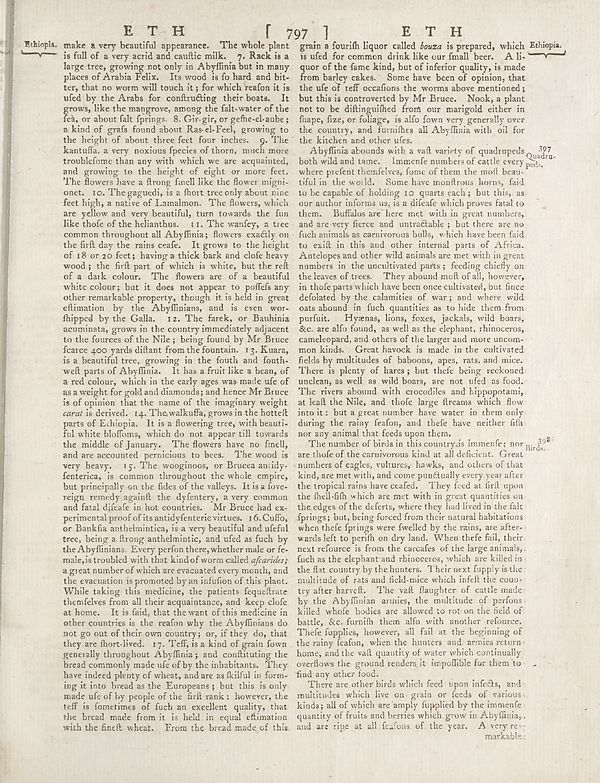

Source · scan and Parse blocks

Parse text by block reading order
- 0Page-headerET H [ 797 ] E T H
- 1TextEthopia, make a very beautiful appearance. The whole plant is full of a very serd and caulite milk. 7. Rack is a large tree, growing too only to: Alyffinia but in the places of Aries Felds. Its word was not touch it; for which reason it is uef by the Aruba for contributing their levels. 1 grows, like the mangrove, among the salt-water of the fed, or about lift fignings. 8. Gir-gir, or geñte-el-aube; i a kind of gratis found about Pass-Elry, growing the height of shortn three feet four inches. 9. The kantuña, a very noxious pieces of thorns, much more remoulders than any with which are are equivinated, and growing to the height of eight or more feet. The flowers have a frong fundil like the flower migiri-one. 10. The grapes, is a then trecely about an feet high, a native of Lamanham. The flowers, which are yellow and very beautiful, turn towards the fun like that of the halamanhas. 1. The variety, a tree common throughout all Abyffinia; flowers exactly over the frit dry the raint eerde. It grows as the height of 16 or oz feet; having a thick back and darkened wood (the first part of which is white), but the refl of a dark colour. The flowers of a beautiful white colour; but it does not appear to purify any other remarkable property, though it is held in great elimination by the Abyffinians, and is even won-flipped by the Galla. 12. The firstek, or Baithian acumists, grows in the country immediately adjacent to the forests of the RhS, bring found by Mr Brue ferse trees yards infant from the Roman. 7. Kuns is a beautiful tree, growing in the fourth and fourth- well parts of Abyffina. 1. Has a fruit like a ben, or a red colony, the red colony aged we made of us a weight for gold and diamonds; and hence Mr Brue is of opinion that the name of the imaginary weight _canal_ be derived. 14. The walkfully, grows in the bustell parts of Ethiopia. It is a flowering tree, with beach fill white thofum, which do on apparent till towards the middle of January. The flowers have no finally, and are accounted pernicions to bees. The wood every heavy. 15. The wogingson, or Bruce andily-fentenas, is common throughout the whole emp, but principally on the flakes of the valley. It is a five- veige remedy against the dyfemin a very common and fatal cliffs of an hot countries. Mr Bruce had ex-periments proof of its antisyferice viruses. 16. Coffo, or Bankfa anthuistics, is a very beautiful and affair tree, being a litrop authenimic, and uifed a fact by the Abyffiniana. Every perform there, whether male or female, is modeled with that kind of worm called _forderies_, a great number of which are excavated every month, and the execution is promoted by an inflation of this plant. While taking this medicine, the patients frequently, themelves from all their acquainitance, and keep clofe at home. It is faind, that the were of the medicine other countries, the media why the Abyffinians do not go out of their own country; or , if they do, that they are florellved. 17. Eff, as a kind of grain flow generally through Abyffinians and confirming the bread commonly made use of by the inhabitants. They have indeed plenty of whites, and are afful ill of forming it into around the Empowers; but this is only made uife of by people of the frit rank; however, the trifle of functions of flesh are excellent quality, that the breb made from it is held in equal education with the finet wheat. From the bread made of this
- 2Textgrain a fourrifi liquor called _loza_ is prepared, which Echiopia is ufed for common drink like our final beer. A li- queor of the fine kind, but of inferior quality, is made from barley cakes. Some have been of opinion, that the uife of treff occations the worms above mentioned; but this is converted by Mr Brune. Nock, a plant not to be diliguated from the margard either in hape, fizaz, or foliage, is alto fown very generally over the country, and families all Abyffinia with oil for the kitchen and other after use.
- 3TextAbyffinia abounds with a wild variety of quadrupeds Quadra- blewild and tuna. Ismemene mixture of each every pods, where gradient themselves come of them the most bear-tiful in the world. Some have monitored burns, fail to be capable of holding 10 quarts early; but this, as our authorism us as is a deficit which proves fast to them. Buffalos are free met with in great numbers, and are very fierce and unterachably, but there are no fish animals as carnivorous balls, which have been laid to call in this and other internal parts of Africa. Antelopes and other wild animals are new with in great numbers in the uncultivated parts; feeding chicky on the leaves of trees. They abound motif of all, however, in their parts which have been one cultivated, but here deflated by the calamities of war; and where wild earabound is, for such quantities as to hide them from profits. Hyermus lona, forces, jacks, and boares, etc. are alfo found, as well as the elephant, rhinoceros, camctypeand, and others of the larger and nonre uncommon kinds. Green harvest is made in the cultivated fields by multitudes of baboons, apes, rats, and mice. There is plenty of lanes is but their being reakored under, as well as the boar, we not feed as food. The rivers abound with crocodles and hippopotami, at last the blue, and those hear means which flow into it; but a great mean have water in them only during the rainy festival, and there have neither fish nor are animal that feel upon them.
- 4TextThe number of links in this countrysis immerie; nor ... 391 is the of the carnivorous kind as all chickens. Great members of regler cultures, lawks, and soldiers of that kind, and met with, and come practically every year after the tropical rains have existed." They tied at first upon the bed-offish which are met with in great quantities on the edges of the defects, where they find lived in the fall fprings but, being forced from their natural habitats when theft fprings were funded by the rare, who afterwards left to permit on dry land. When theffe full, their next reference is from the decades of the large animals, such as the elephant and rhinoceros, which are killed in the first country by the hunters. Their next topply is the multitude of natural didalmics which infelt the country after herself. They said daughter of cattle made by the Abyffinian armies, the multitude of persons killed, which bodies are allowed to root on the field of battle, AC fusion them with another entrance. Thiefe puppies, however, all fail at the beginning of the nearby fashion, when hunters and arms return home, and the val quantity of water which continually overflows the ground renders, it impoillike for them to find any other food.
- 5TextThere are other birds which feed upon infects, and multitles which live on grain or feeds of various kinds all of which are simply supplied by the moments of guests of fruits and berries which grow in Abyffinis, and are ripe at all feathers of the year. A very rec-
- 6Textmarkable:
- page_id
- britannica:309f765b1ecc83e0a7f7762e44b4a927a7555443:train:1415
- sha256
- d28d11d047269c4378e2a038829a2e80312fca36533bc35728f3c45768d0fb89
- Parse
- nvidia/nemotron-3.5-parse · finish stop